WindowsMobileでGPS地図を使う : デバイスの基本設定
Home > Software > ソフトウエア開発・サーバ管理のメモ帳 > このページ
Last Update
| デバイスの基本設定 デスクトップの設定 ネットワークの設定 GPSの設定 SiRF GPSモジュールの設定 地図の作成 |
このページではWindows Mobile（Pocket PC）OS搭載のPDAで、オフラインのGPS地図が使えるようになるまでの各種設定について記している。 動作確認した機種は次の通り
- Mitac製 Mio 168, 2003年発売, Pocket PC 2003搭載, CPU:Intel Xscale PXA255 300MHz, display 640x480
- HP製 iPAQ 112, 2008年発売, Windows Mobile 6搭載, CPU:Marvell PXA310 624MHz, display 320x240
基本設定
ハードウエア・リセット（工場出荷状態）から、最低限行ったセットアップ
デスクトップの設定
標準状態では、夜間に画面を見るときに眩しすぎる。使いもしないPIM機能のために画面がごちゃごちゃしているのもすっきりさせたい。
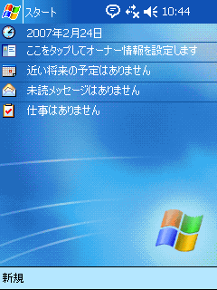
インストール直後の状態
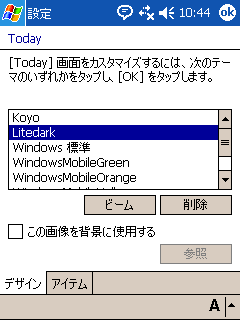
設定 － Today
デスクトップテーマを設定する
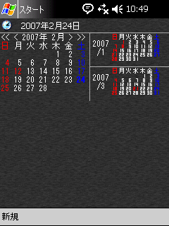
カスタマイズを行った後
電源の設定
バッテリーの持ちを最大限伸ばすための設定
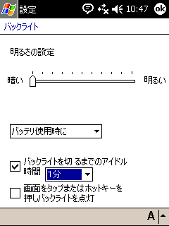
設定 － バックライト
最も暗く設定、「画面タップで点灯」をOFF
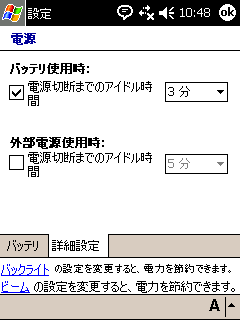
設定 － 電源
バッテリ使用時の電源切断までを設定
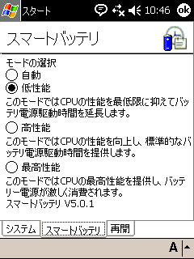
Mioユーティリティ － スマートバッテリ
「低性能」に設定
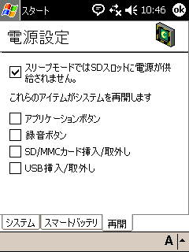
Mioユーティリティ － 再開
スリープ時にSDカードOFF、ホットボタン未使用
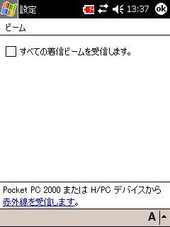
設定 － ビーム
赤外線の受信をOFFにする
サウンド設定
標準設定では音が大きすぎる。
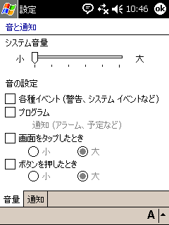
設定 － 音と通知
最小音量、「音の設定」では音を鳴らさない
メニューの設定
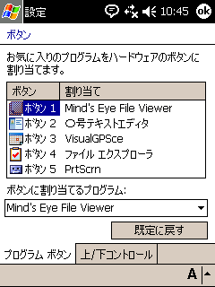
設定 － ボタン
割り当てを調整
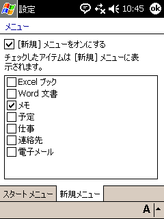
設定 － メニュー
普段使わないメニューはOFF
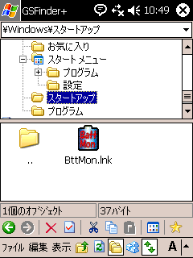
\Windows\スタートアップ フォルダ
全て削除しても問題なし
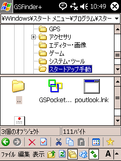
\Windows\ｽﾀｰﾄ ﾒﾆｭｰ\ﾌﾟﾛｸﾞﾗﾑ\... フォルダ
必要に応じ手動で立ち上げるソフトウエア
※ 再起動時に自動的に起動するプログラムと、ソフトウエア・リセットのエラー回避
「スタートアップ」フォルダに入れたプログラムが少ないほど再起動に失敗する確率が下がる気がする。特に、GSPocketMagic++
というメニュー拡張ソフトを自動起動しておくと（ほぼ確実に）起動に失敗する。
再起動後に手動でGSPocketMagic++を立ち上げるため、スタートメニューにフォルダを作って、そこにショートカットを入れている。
Pocket Outlook も自動起動になっていたが、メーラは別のものを使っているので、自動起動から外している。